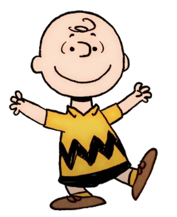
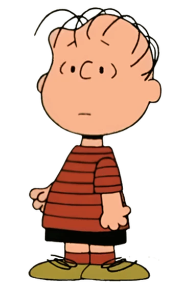

Peanut Characters
-

Charlie Brown
Snoopy is Charlie Brown's pet in the Peanuts comic strip. Despite his history of conflicted loyalties, Snoopy's constant disrespect for Charlie Brown, and his inability to remember his name (he refers to him as "that round-headed kid"), Snoopy has shown both love and loyalty to his owner. In early Peanuts strips, Charlie Brown was not Snoopy's owner (as seen in the February 2, 1951, strip), and it was not made clear who, if anyone, his actual owner was. At various times, it was suggested that he was Patty's dog. Charlie Brown was first portrayed as being responsible for Snoopy in the strips of November 1 and 3, 1955; it was not until September 1, 1958, that Snoopy was specifically said to be Charlie Brown's dog. (In the September 20, 1980, strip, Charlie Brown comments that he once told Snoopy to "stay" and "he never went home".) In both the early strips and the movie Snoopy Come Home, Charlie Brown says that he got Snoopy after being bullied by another kid. His parents took him to the Daisy Hill Puppy Farm to cheer him up, where he met and bought Snoopy. The special Snoopy's Reunion depicts their first meeting.
-

Sally Brown
Sally Brown is Charlie Brown's younger sister. She does not care that much for Snoopy and often calls him a stupid beagle. Sally usually complains when her big brother asks her to feed Snoopy whenever he is away from home. While she is still an infant, Sally has a friendly and playful relationship with Snoopy. In later years, Sally occasionally enlists Snoopy's help in school assignments.
-

Lucy
Snoopy frequently tries to kiss Lucy on the cheek or nose, which Lucy, who is afraid of dog germs, thoroughly hates. Despite her distaste of doggy kisses, Lucy seems to care for Snoopy: in Snoopy Come Home, Lucy is sad to see him go and is (momentarily) glad when he comes back home.
-

Linus
Snoopy often tries to steal Linus's blanket, leading to slapstick fights and wild chases, the latter of which usually involve Snoopy running up, grabbing the blanket in his mouth, then running off with Linus holding on for dear life, and finally swinging Linus and the blanket around and around in a circular motion through the air before letting go and they both fly off to who-knows-where.
-

Lila
Lila was Snoopy's owner before Charlie Brown. Snoopy visits her in the cartoon Snoopy Come Home and struggles to decide whether to stay with Charlie Brown or go back to Lila. Lila quickly persuades him to leave Charlie Brown so Snoopy can live with her again. However, upon arriving at her apartment complex, Snoopy is very relieved to see a "NO DOGS ALLOWED" sign and returns to live with Charlie Brown.
-

Peppermint Patty
Peppermint Patty often refers to Snoopy as a "funny-looking kid with a big nose", unaware that he is a beagle. In the March 21, 1974, strip, Marcie tells Peppermint Patty that Snoopy is a beagle, finally resulting in her realizing his true identity. Snoopy serves as Peppermint Patty's watchdog several times. She is one of the few girls who does not get disgusted after being kissed by him.
-

Schroeder
Schroeder does not mind much when Snoopy sits against his toy piano, except when Snoopy dances on top of the piano, much to Schroeder's annoyance. He also sometimes plays with the notes coming from the piano.
-

Rerun van Pelt
Rerun, the youngest child character in the strip, plays with Snoopy sometimes. In some strips, Rerun and Snoopy are playing cards with each other, both of them clueless about the rules.
-

Woodstock
Woodstock is Snoopy's best friend and sidekick. He is a small, yellow bird of indeterminate species. He speaks in a chirping language that only Snoopy and his other bird friends can understand. In return, the birds somehow understand Snoopy's thoughts.
-

Fifi
Fifi is a major love interest of Snoopy and she appears in Life Is a Circus, Charlie Brown and The Peanuts Movie. In Life Is a Circus, Charlie Brown, Snoopy sees Fifi, a white poodle, at a circus and starts to get attracted to her. He and Fifi do a trapeze act and afterward, he runs away, taking Fifi with him. Fifi decides to go back to the circus, however, leaving Snoopy heartbroken and forced to return to Charlie Brown.